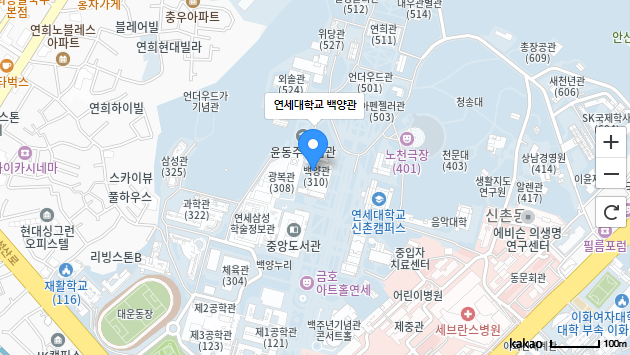
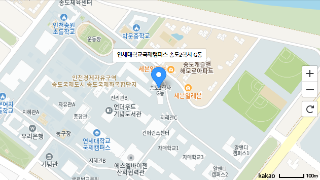

연세대 심리상담센터
연세대에는 도움이 필요하면 이용할 수 있는 심리상담센터가 있습니다.
심리상담센터는...
상담 전문가와의 심리검사 및 상담을 통해 학생들이 대학생활에서 경험하는 심리적 어려움,
적응 및 진로 선택의 어려움을 잘 해결하도록 도우며,
다양한 프로그램을 시행하여 자기 이해와 자아 개발을 돕는 곳입니다.
캠퍼스와 학년에 따라 적절한 맞춤형 서비스를 제공합니다.
국제 캠퍼스
기본적인 심리검사와 상담 + 신입생에게 특화된 자기 이해 및 진로 탐색 워크숍 실시,
대학생활과 기숙사 적응을 돕는 심리지원 프로그램 지원
신촌 캠퍼스
기본적인 심리검사와 상담 + 2학년 이상 학부생 및 대학원생에게 필요한 다양한 주제의
정신건강 지원 프로그램(심리교육 및 워크숍, 사이코드라마 등)을 학생의 요구에 맞춰 시행
장애학생지원센터
장애 학생의 적응 및 심리적 어려움 발생 시 심리 상담 서비스 연계 지원
성평등센터
성인지감수성 향상 및 교내 성고충 사건과 관련하여 필요시 심리 상담 서비스 연계 지원
사이트 바로가기 >신촌캠퍼스
(신촌)연세대학교 백양관 북측동 408호
국제캠퍼스
(국제) 연세대학교 국제캠퍼스 송도2학사 반피득홀
